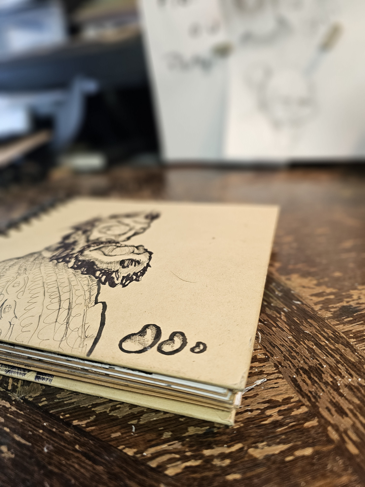

pages du carnet
Galerie
Une sélection de caricatures, dessins au stylo, recherches anatomiques, créatures humaines et expérimentations graphiques.

Regard instable

Créature humaine

Portrait brut

Étude organique

Expression nerveuse
dessins disponibles
Prints & originaux
Certaines œuvres présentes dans la galerie sont disponibles en reproduction ou en pièce originale.
Voir la boutiquecommande personnalisée
Transformer un visage.
Possibilité de créer des caricatures et portraits personnalisés à partir d’une photo ou d’une idée.
Commander un dessin